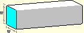
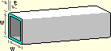

A cross-section is the shape of the surface formed by cutting through a member, perpendicular to its axis.
The cross-section of the solid bar below is a square measuring w on each side.

The cross-section of the hollow tube below is an open square measuring w on each side, with a wall thickness of t.

The cross-sectional area of a member is the surface area of the cross-section, represented by the light blue shaded region on both pictures above.